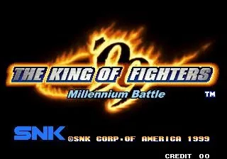

Neo Geo · Nº 125
The King of Fighters '99 - Millennium Battle
- Año: 1999
- Desarrollador: SNK
- Género: Lucha / Uno contra uno
- Jugadores: 2 jugadores
¡Llega el nuevo sistema de «strikers»! Cada equipo pasa a tener cuatro personajes, con un total de 30 a elegir, decididos a derrotar a Krizalid y su malvado abrigo de plumas.
Controles
que A + B esquive y C + D dé el golpe que derriba. Comprobar cómo se llama al Striker.
Lucha, disposición de Neo Geo: golpes flojos abajo y fuertes arriba.
| Panel | Juego |
|---|---|
 | A · Dar un puñetazo flojo |
 | B · Dar una patada floja |
 | C · Dar un puñetazo fuerte |
 | D · Dar una patada fuerte |
  | Empezar |
 | Meter una moneda |
+  | Salir del juego |
El panel en Neo Geo

Argumento
Recopilado de internet (2026-11-02). Lo marcado con ⚠️ no está probado en la bartop.
Han pasado dos años del último torneo y nadie ha vuelto a ver a Kyo Kusanagi ni a Iori Yagami desde que vencieron a Orochi. Llegan invitaciones a un torneo más secreto, con equipos de cuatro y un organizador desconocido.
Debuta el nuevo protagonista, K', con su compañero Maxima, en el equipo del héroe junto a Benimaru y Shingo. Aparecen además dos clones de Kyo, Kyo-1 y Kyo-2.
Final: el jefe final es Krizalid. Con buena puntuación hay un combate extra contra Kyo o Iori.
Fuentes
Jugabilidad
Recopilado de internet (2026-11-02). Lo marcado con ⚠️ no está probado en la bartop.
- Tipo de juego: lucha por equipos de SNK (1999).
- Equipos de cuatro: tres luchan y el cuarto es el Striker, que entra a ayudar un número limitado de veces.
- Modos de poder: Counter (más ataque y supergolpes sin límite durante un tiempo) o Armor (más defensa, sin supergolpes).
Fuentes
Guía de niveles
Recopilado de internet (2026-11-02). Lo marcado con ⚠️ no está probado en la bartop.
Se lucha contra los demás equipos y luego contra Krizalid. Con buena puntuación, combate extra contra Kyo o Iori. Se ve en el vídeo de «Vídeos».
Fuentes
Objetos
Recopilado de internet (2026-11-02). Lo marcado con ⚠️ no está probado en la bartop.
No hay objetos.
Fuentes
Trucos y secretos
Recopilado de internet (2026-11-02). Lo marcado con ⚠️ no está probado en la bartop.
Secretos
- Combate extra contra Kyo o Iori si la puntuación es alta.
Fuentes
Longplay

Partida completa de la recreativa (24 min), de Medysoft: The King of Fighters '99 (Arcade) [Longplay] | 1080p 4:3 |.
Pulsa el minuto de un nivel para ver el vídeo desde ese punto.